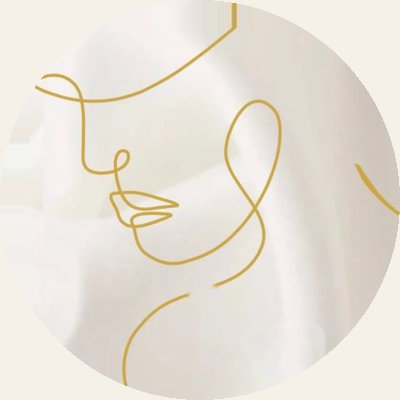

В этом выпуске
- ЗаписьОнлайн за минутуЗона, день и время
- ЦенаСколько стоит курсОтметьте зоны, сумма посчитается
- ТестКакие у меня растяжкиПять вопросов и честный ориентир
- РезультатДо и послеСравните свои фото ползунком
- УходПосле процедурыЧто делать день за днём
Колонка мастера

Сначала консультация и честный разговор о результате. Без обещаний «навсегда».Марина Гайнуллина
Прайс
Цена за зону
| Живот, бока, бёдра | 5 000 ₽ |
| Поясница, руки, внутр. поверхность бёдер, икры | 4 000 ₽ |
| Шрам, шов, рубец | от 2 000 ₽ |
За одну процедуру. Обычно 2–3 процедуры с интервалом не меньше месяца.
Как это происходит
КонсультацияСмотрим зону и противопоказания, говорим, чего ждать
СтерильностьОдноразовые картриджи вскрывают при вас
ПроцедураАппарат прорабатывает растяжки, StriaLess успокаивает кожу
Уход домаПамятка и дневник ухода по дням
Ещё в номере
Вопрос — ответ
Сколько процедур нужно?
Чаще всего 2–3 на одну зону, с интервалом не меньше месяца.
Это больно?
Ощущения индивидуальны и зависят от зоны. Можно делать паузы.
Когда заметен результат?
Постепенно, несколько месяцев. Растяжка становится менее заметной; стереть её полностью не может ни одна методика.
Читайте нас: ВКонтакте · Telegram · Instagram
Главный редактор — Марина Гайнуллина